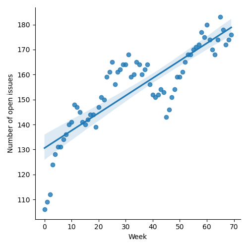
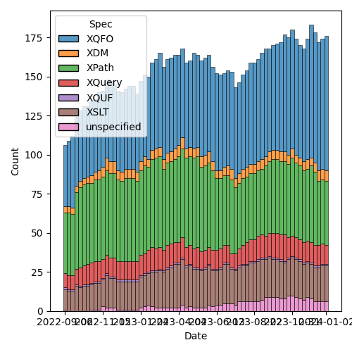
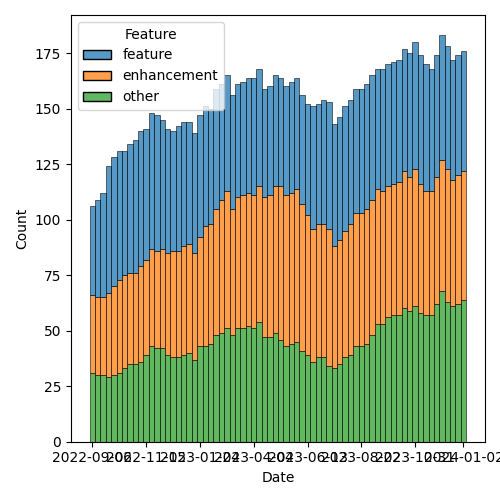

QT4 CG Meeting 060 Minutes 2024-01-09
Table of Contents
- Minutes
- Summary of new and continuing actions
[0/6] - 1. Administrivia
- 2. Technical Agenda
- 3. Any other business?
- 4. Adjourned
Meeting index / QT4CG.org / Dashboard / GH Issues / GH Pull Requests
Minutes
Approved at meeting 061 on 16 January 2024
Summary of new and continuing actions [0/6]
[ ]QT4CG-052-02: NW to consider how to schedule an “editor’s meeting”[ ]QT4CG-052-06: MK to consider the editorial question of “promotion” for the symmetric relations.[ ]QT4CG-055-01: MK to clarify that the return type of the deep lookup operator is a flat sequence.[ ]QT4CG-056-04: MK to write a proposal for adding a select attribute to xsl:text[ ]QT4CG-058-01: MK to clarify infn:numeric-comparethat -0 and +0 are equal.[ ]QT4CG-058-02: MK to consider providing more advice about the pitfalls of mixing decimal and double when sorting[ ]QT4CG-060-01: NW to describe why we’re closing #899 without change[ ]QT4CG-060-02: MK to sketch out a proposal withsubsequenceandsubsequence-where.[ ]QT4CG-060-03: MK to review PR and if there are no concerns, merge it without discussion next weeks[ ]QT4CG-060-04: CG to make a PR to removenumeric-compareand consider other functions
1. Administrivia
1.1. Roll call [10/11]
Regrets: MSM.
[X]Reece Dunn (RD)[X]Sasha Firsov (SF)[X]Christian Grün (CG)[X]Joel Kalvesmaki (JK) [:10-][X]Michael Kay (MK)[X]John Lumley (JL)[X]Dimitre Novatchev (DN)[X]Wendell Piez (WP) [:10-][X]Ed Porter (EP)[ ]C. M. Sperberg-McQueen (MSM)[X]Norm Tovey-Walsh (NW). Scribe. Chair.
1.2. Accept the agenda
Proposal: Accept the agenda.
Accepted.
1.2.1. Status so far…

Figure 1: “Burn down” chart on open issues

Figure 2: Open issues by specification

Figure 3: Open issues by type
1.3. Approve minutes of the previous meeting
Proposal: Accept the minutes of the previous meeting.
Accepted.
1.4. Next meeting
The next meeting is scheduled for Tuesday, 16 January 2024.
Any regrets for the next meeting?
1.5. Review of open action items [0/6]
[ ]QT4CG-052-02: NW to consider how to schedule an “editor’s meeting”[ ]QT4CG-052-06: MK to consider the editorial question of “promotion” for the symmetric relations.[ ]QT4CG-055-01: MK to clarify that the return type of the deep lookup operator is a flat sequence.[ ]QT4CG-056-04: MK to write a proposal for adding a select attribute to xsl:text[ ]QT4CG-058-01: MK to clarify infn:numeric-comparethat -0 and +0 are equal.[ ]QT4CG-058-02: MK to consider providing more advice about the pitfalls of mixing decimal and double when sorting
1.6. Review of open pull requests and issues
1.6.1. Blocked
1.6.2. Merge without discussion
The following PRs are editorial, small, or otherwise appeared to be uncontroversial when the agenda was prepared. The chairs propose that these can be merged without discussion. If you think discussion is necessary, please say so.
- PR #926: 860 Editorial rearrangement of spec for shallow lookup
- PR #925: 780 Document incompatibility in format-number etc
- PR #924: 648 Disallow user modifications to schema for FN namespace
- PR #923: 913-new-examples-for-local-name-etc
- PR #922: 915 function body terminology
- PR #918: Minor cx through chap. 14
- PR #914: XQFO minor edits
- PR #912: XQFO: Minor edits
- PR #907: 906 fn:deep-equal: unordered → ordered
- PR #905: 898 - relax the constraints on document-uri
- PR #904: 821 Annotations: Make default namespace explicit
- PR #901: 895 Parameters with default values: allow empty sequences
Proposal: merged without discussion
Accepted.
1.6.3. Close without action
It has been proposed that the following issues be closed without action. If you think discussion is necessary, please say so.
- Issue #899: Simplifying the language - types have behaviour.
Propocal: close without action
- MK: We know this is a problem, but no one’s come up with a better solution. It’s an area where adding any additional features will just make it more complicated.
Accepted.
ACTION QT4CG-060-01: NW to describe why we’re closing #899 without change
1.6.4. XSLT focused
The following PRs appear to be candidates for a future XSLT-focused meeting.
- PR #871: Action qt4 cg 027 01 next match
These issues identify the XSLT-focused changes that have been made to the specifications but which have not been established by the community group as the status quo.
- Issue #168: XSLT Extension Instructions invoking Named Templates
1.6.5. Substantive PRs
The following substantive PRs were open when this agenda was prepared.
- PR #927: 861 Rewrite spec of deep lookup operator
- PR #921: 920 Allow xsl:break and xsl:next-iteration within branch of xsl:switch
- PR #916: 720 Allow methods in maps with access to $this
- PR #909: 893 fn:compare: Support for arbitrary atomic types
- PR #880: 872 Symmetry: fn:items-at → fn:get
- PR #874: 878 Proposed extension to subsequence
- PR #832: 77 Add map:deep-update and array:deep-update
- PR #737: 295: Boost the capability of recursive record types
1.6.6. Proposed for V4.0
The following issues are labled “proposed for V4.0”.
- Issue #910: Introduce a Kollection object with functions that operate on all types of items that can be containers of unlimited number of "members"
- Issue #908: Function identity: documentation still too vague
- Issue #850: fn:parse-html: Finalization
- Issue #829: fn:boolean: EBV support for more item types
- Issue #716: Generators in XPath
- Issue #689: fn:stack-trace: keep or drop?
- Issue #583: array:replace(), etc
- Issue #557: fn:unparsed-binary: accessing and manipulating binary types
- Issue #340: fn:format-number: Specifying decimal format
- Issue #283: Enumeration types
- Issue #260: array:index-of
- Issue #236: map:group-by or map:build with a sequence of keys
- Issue #33: json parsing number type option
- Issue #31: Extend FLWOR expressions to maps
2. Technical Agenda
2.1. PR #874: 878 Proposed extension to subsequence
See PR #874
- MK: This arises from CG’s proposal to rename items-before and items-after.
- … It goes back to an idea of combining them all into a single function with optional parameters.
- MK: All this PR does is introduce the new function, it would need more editorial work if accepted.
- MK Describes the changes in the
fn:subsequencefunction. - RD: In the binding of
$tempyou’ve mentioned greater-than-or-equal but it’sle. - MK: This gives the correct, backwards-compatible answer in the
NaNcase. - DN: It seems very powerful, and I admire powerful things. At the same time, I’d like to see something less complicated. It’s very easy to get confused. We have two different pairs of mutually-exclusive arguments. I think this is the first function with mutually-exclusive arguments.
- MK: The closest analogy is probably
fn:slice, which we haven’t looked at all that much.- … We had four separate functions, we had difficulty finding names for them, but the proliferation is an issue. This swings the pendulum the other way.
- … It gives more functionality than we had before, by using
$fromand$lengthfor example.
- DN: I’d like to make a parallel with .NET
linqwhere they’re kept separate. That’s much more understandable. - MK: I like that kind of API, though it’s quite hard to optimize statically. It’s hard to see how to introduce that into our language without mutable iterators and streams.
- DN: We already have generators and collections on the table. It’s just an example of an alternative that’s simpler.
- CG: First, i was a bit hesitant about having all the functions in
fn:subsequence, but we implemented it and showed it to users and it was intuitive. - RD: It’s only
$startand$fromthat are mutally exclusive. - MK: No,
$length$,$while, and$untilare exclusive as well. - RD: Oh, then my idea for using a union doesn’t help. We already have FLOWR based sytnax for working with loops so maybe it makes sense to look if anything is required there.
- MK: That’s an alternative, to add clauses to FLOWR expressions. We could certainly look at that. I like doing things with functions rather than syntax, but that would certainly be an option.
- RD: We could have both. There are equivalent expressions that are
supported in the language. We introduced
every()andany()functions as equivalent to the quantifier expressions. - CG: I wonder if there are many use cases. Do folks really want to do this?
- MK: I see lots of questions about this on StackOverflow.
- DN: Looking a bit more, it seems to me that it can be two functions:
the existing function and a new function
subsequence-wherethat has$fromand ~\(while\). I think that would be more useful and understandable. - NW: That does address a concern I have about making the
subsequence()function more complicated. - MK: I can sketch that out.
ACTION QT4CG-060-02: MK to sketch out a proposal with subsequence and subsequence-where.
2.2. PR #737: 295: Boost the capability of recursive record types
- PR #737
- MK reviews the background for the issue.
- MK: John Snelson first proposed an idea like this in a blog post and pointed me to the relevant literature. These are iso-recursive types.
- MK: That’s about it really, there are no special operators. There’s nothing that enables you to create infinite instances.
- DN: This is another example of something I really like. I have one question. There are some conditions to prevent infinite/circular reference. Is there an guarantee that infinite/circular reference involving multiple types can happen, or do we need explicitly to specify such conditions? I would like to see a separate chapter about records in the final spec.
- MK: There are two questions. Can you create an infinite data structure? No. That’s a question of what operators we provide. You can only create them with the map constructor and such. We don’t have pointers. Do the rules ensure that it is always possible to construct an instance? It doesn’t really matter if you allow users to construct types that have no instances. That’s already true in a few places. They aren’t useful, but they don’t do any harm. The rules, like it has to be an optional field, are a bit paternal. It means the system will reject some useless types.
- DN: To refine the question: is it possible to have two record types, each of which references the other type?
- MK: Yes.
- DN: Then we should have an example or prose telling us if creating such a chain of references is infinite.
- RD: I have three questions. One is, should we remove the self-reference in the record declarations we have?
- MK: Yes, this is supposed to replace that.
- RD: Two, in the bit where iso-recursive is described, we should refer to the expanded QName because if we’re just doing a simple name match.
- MK: Yes, I may have just overlooked that because I thought it was obvious.
- MK: One thing that occurred to me is that we’re starting to treat
named record types as being a bit more than just names for things.
- … They’re no longer just aliases, they’re introducing a new capability.
- … One thing I wanted to bounce of people was whether we can get rid of named item types in general and only having named record types.
- RD: I think named item types are useful for things like a binary type locally.
- MK: Unions and enumerations are another example.
- RD: Do we list the named item types as a possibility in the atomic types and should we?
- MK: I think we do.
Some discussion of what it would mean for named item types to be only allowed as record types.
- JL: I could see a case where you want to use a named item type as shortcut for something you didn’t want to have to write over and over.
- JL: Are these all global?
- MK: In XSLT, I don’t think we’ve fully developed it. But I think they should be subject to the package level visibility. They’re not local. In XQuery they might be module level.
- RD: Should the named item type be with the functions and variables that have public/private scope in XQuery then?
MK attempts to check what we’ve actually done.
- MK: Item type declarations do have annotations so they can be declared public or private. I’m not sure if that’s fully developed.
- DN: Is it possible to declare a record type with no fixed fields? If it’s possible then every map is a record that has zero keys. I think that would be good.
- MK: You can define
record(*)which is everything at all. - DN: Then we can stop talking about maps and only talk about records with no fields.
Proposal: merge this PR?
ACTION QT4CG-060-03: MK to review PR and if there are no concerns, merge it without discussion next week
2.3. PR #909: 893 fn:compare: Support for arbitrary atomic types
- PR #909
CG discusses the background of the proposal.
- CG: This is a simpler proposal. It generalizes the
comparefunction to take any atomic type.- … For all types, the rules are defined using the existing rules for comparisons.
- … The most significant differences are in strings and URIs.
- DN: Don’t we already have a
op:keys-equalfunction (not exposed), isn’t that the same? If it isn’t, then we should describe how they’re different. - CG: Are you thinking of
atomic-equal? - DN: No, in XPath 3.0 there’s something like
op:keys-equal - MK: Maps are compared with
atomic-equalwhich only cares about equality. This has a lot of similarities toatomic-equalbut it handles context sensitivity and comparisons (for sorting, for example).- … We have lots of comparison functions, but they all have a rationale for existence.
- … I support bundling the functionality like this into a single function.
- MK: Does this make
numeric-compareredundant? - RD: I was going to make the same comment.
- DN: If these are so closely related, will this allow us to eliminate the other comparison functions?
- MK: We could consider getting rid of the
op:versions and putting it all here, but it doesn’t effect users. It would be interesting to see how that looks. - CG: I’d like to drop
numeric-compareand include it in this function. - NW: I like that.
- JK: I support this proposal too.
Proposal: accept this PR
Accepted.
ACTION QT4CG-060-04: CG to make a PR to remove numeric-compare and consider other functions
3. Any other business?
3.1. What about PR #880?
- NW: What should we do about scheduling continuing discussion of PR #880?
- MK: It’s all tied up with what we do about subsequence.
- NW: Ok, I’ll just let it float along in the agenda for a bit.
3.2. Meeting time?
- JL: What’s going on with moving the time?
- NW: I haven’t had enough replies yet. The replies I have received don’t seem likely to move us. I’ll try to nudge folks.